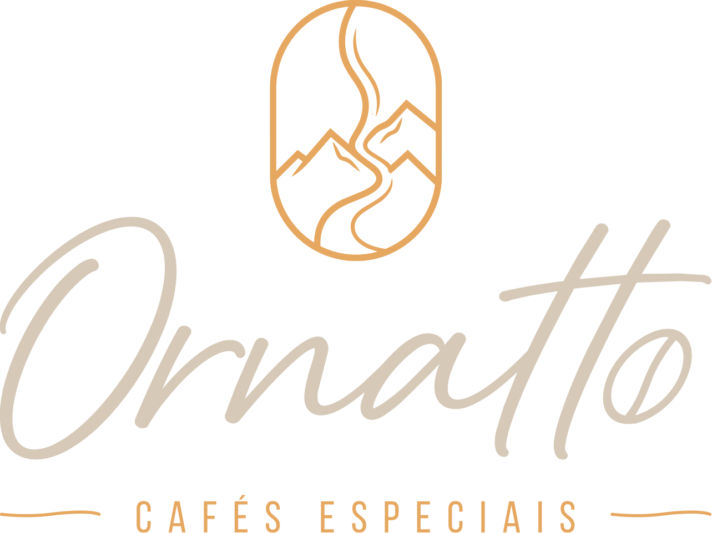

Café Gourmet
LOTE ES1
Chocolate · Caramelo
82
R$29,90
Pacote 250 g
CHAPADA DE MINAS
Chocolate · Caramelo
Chocolate · Caramelo · Rapadura · Garapa · Açúcar mascavo · Acidez láctea
Maracujá · Mel · Caramelo · Morango · Acidez cítrica brilhante · Finalização refrescante
Vinho branco · Whiskey bourbon · Mel
Flor de laranjeira · Nibs de cacau · Mel · Frutas cristalizadas · Acidez cítrica brilhante · Finalização longa
Chocolate · Caramelo · Rapadura · Garapa · Açúcar mascavo · Acidez láctea